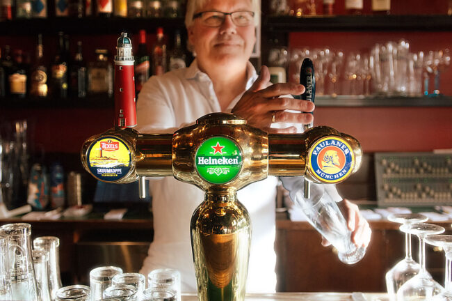
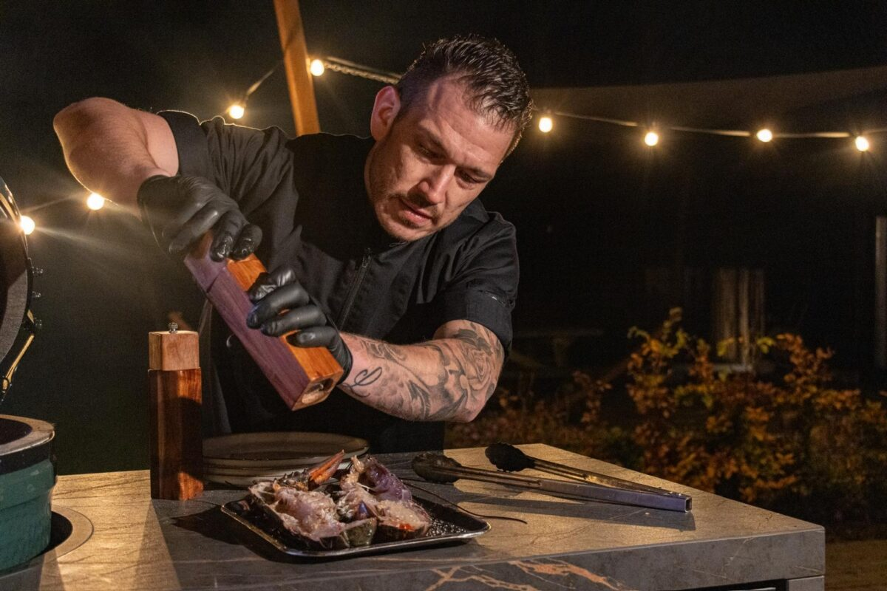

Baarn, sinds 1971
Prins Hendrik
Café
Een typisch bruin café waar iedereen zich thuis voelt. Heerlijk getapt bier en borrelhapjes, al sinds 1971 een echt familiebedrijf.
Prins Hendriklaan 1, Baarn
Een echt familiebedrijf
Café Prins Hendrik is vanaf 1971 een echt familiebedrijf. Een typisch bruin café waar iedereen zich thuis voelt.
Schuif aan bij de bar of zoek een plek op het terras aan de Prins Hendriklaan. Geniet van heerlijk getapt bier, een glas wijn en een goede borrelhap.
- Bieren
- 16 soorten, ook alcoholvrij
- Wijnen
- van Wijnkoperij De Gouden Ton
- Hapjes
- van ossenworst tot patatje met

Ontdek onze dranken en hapjes
Getapt, geschonken en uit de keuken. Vraag aan de bar naar het seizoensbier.
- Heineken5%
- Straffe Hendrik Tripel9%
- Paulaner Hefe-Weissbier5,5%
- Texels Skuumkoppe6%
- Brouwerij 't IJ IJwit6,5%
- Brouwerij 't IJ I.P.A.6,5%
- Brugse Zot Blond6%
- Liefmans Fruitesse3,8%
- Desperados5,9%
- Duvel8,5%
- Apple Bandit Cider4,5%
- Amstel Radler2%
- Affligem Blond0%
- Texels Skuumkoppe0%
- Heineken0%
- Seizoensbierwisselt
Al onze wijnen worden geleverd door Wijnkoperij De Gouden Ton en we hebben altijd een ruim aanbod rode, witte en rosé wijnen.
Rood
- Merlot
- Malbec
- Tempranillo
Wit
- Verdejo
- Sauvignon Blanc
- Chardonnay
Bubbels
- Cava
Koud
- Ossenworst
- Leverworst
- Kaas
- Brood met aioli
Uit de frituur
- Bitterballen van Oma Bob's
- Mini frikandelletjes
- Kaastengels Topking
- Vlammetjes Topking
- Gamba kroketjes
- Truffel kroketjes
- Ham kroketjes
Warm
- Gyoza
- Nacho's uit de oven
- Tosti ham kaas
- Patatje met
Private diner
Voor een private diner, jubileum, verjaardag of een andere gezellige bijeenkomst bent u bij ons aan het juiste adres.
U heeft de naastgelegen ruimte met zelfstandige voorzieningen voor uzelf, inclusief heerlijk eten of een goede borrelhap.
- Private diner
- Jubileum
- Verjaardag
- Gezellige bijeenkomst
Of bel 06 11 35 28 33

Pop-up restaurant met Juan Lopez
Een unieke culinaire avond. Chef Juan Lopez opent opnieuw zijn exclusieve pop-up restaurant voor een avond vol verrassende smaken en sfeer.
Data 2026, op donderdag
- 27 augustus
- 24 september
- 29 oktober
- 26 november
- Waar
- Café Restaurant Prins Hendrik, Prins Hendriklaan 1a
- Inloop
- vanaf 18:00
- Prijs
- € 67,50 per persoon, vooraf betalen
Let op: alleen op inschrijving. Je ontvangt een bevestiging en de betaalgegevens per e-mail.
InschrijvenOpeningstijden
| Maandag | gesloten |
|---|---|
| Dinsdag | 15:00 tot 00:00 |
| Woensdag | 15:00 tot 01:00 |
| Donderdag | 15:00 tot 02:00 |
| Vrijdag | 15:00 tot 02:00 |
| Zaterdag | 15:00 tot 02:00 |
| Zondag | gesloten |